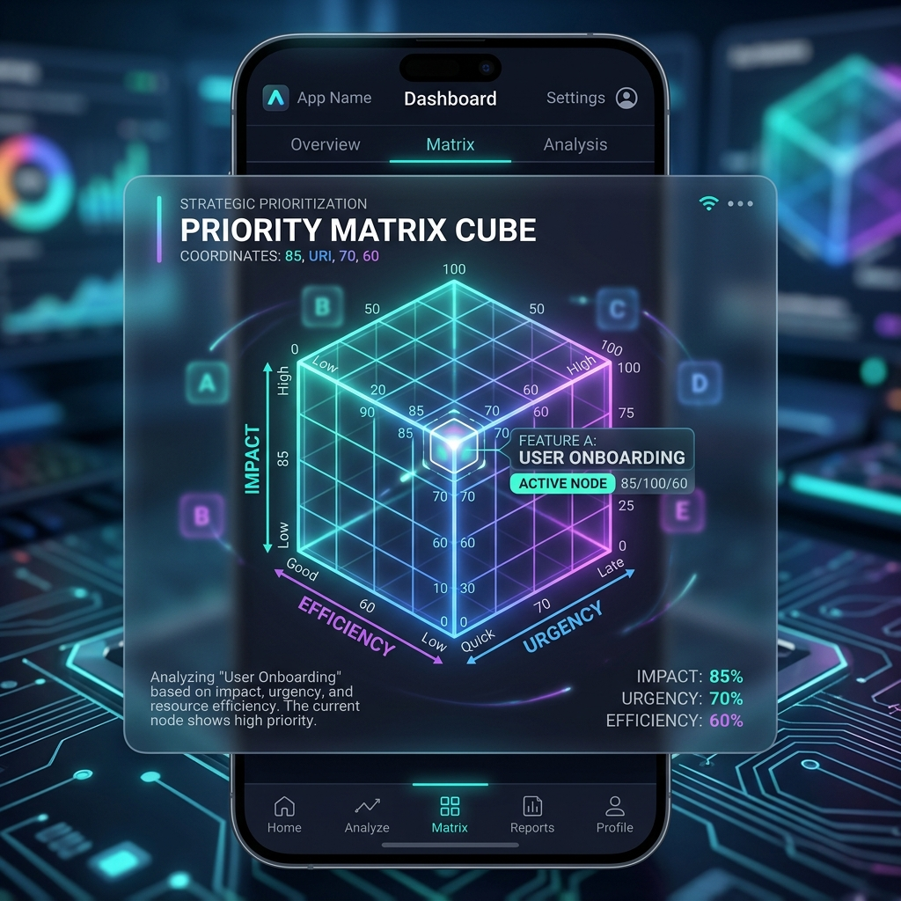
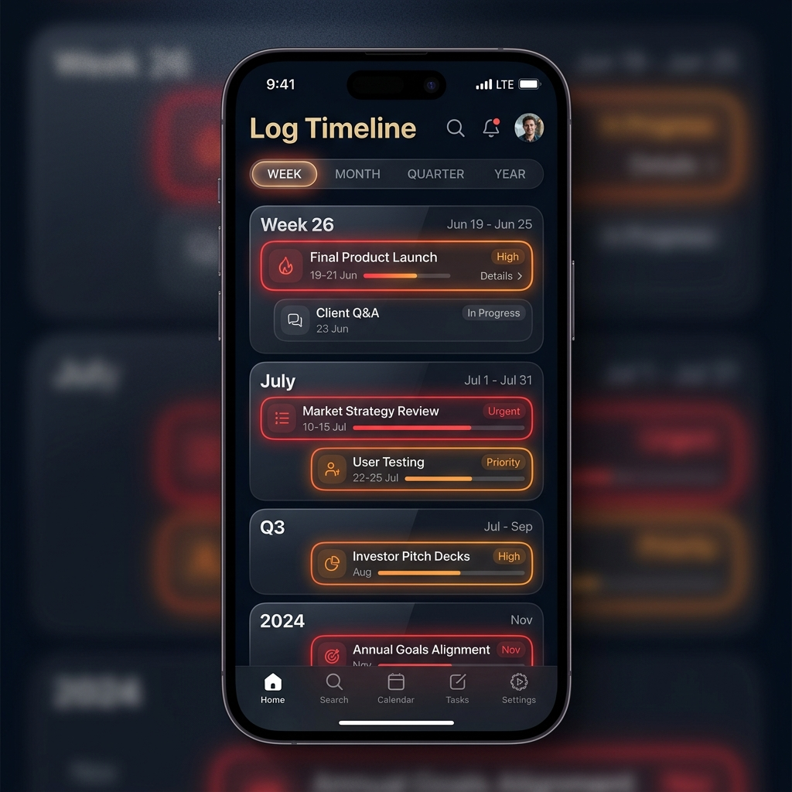
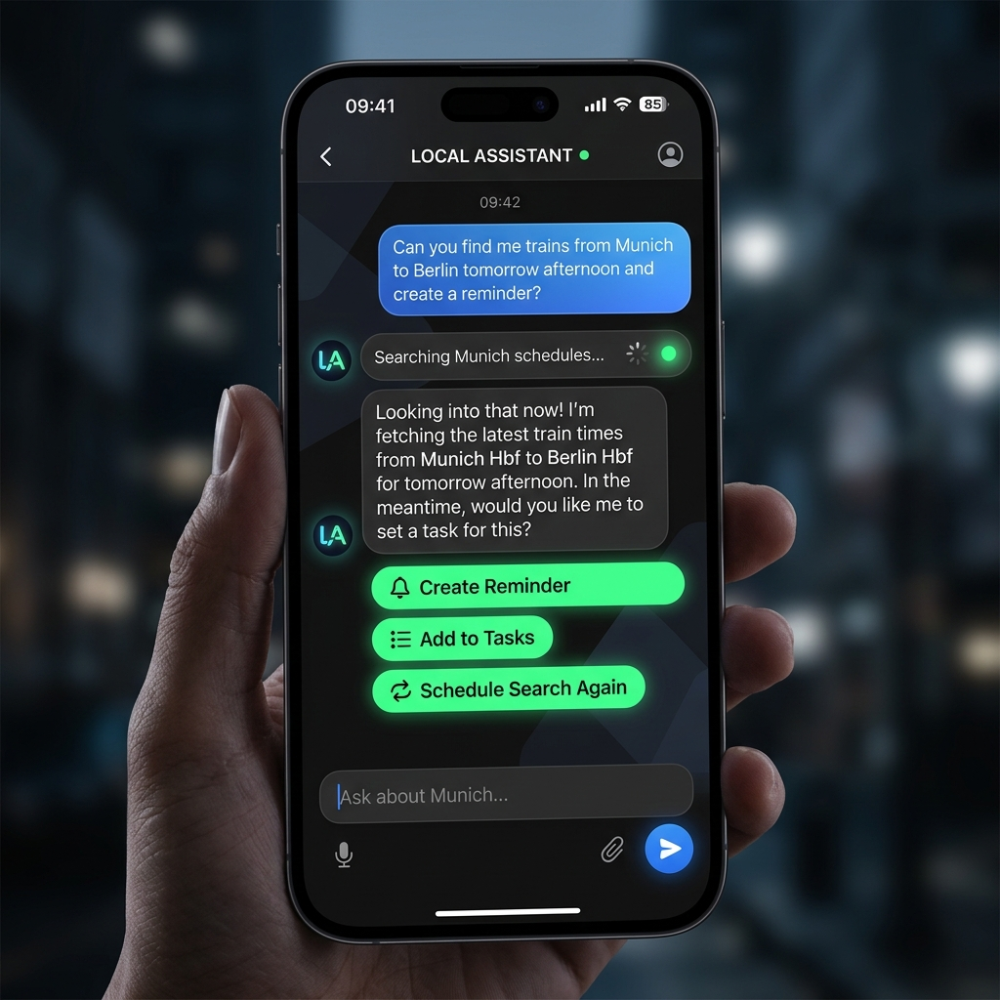

Your Private 3D Second Brain
Prioritize uses a local edge model (Gemma 4 E4B) to parse, schedule, and structure your life. No cloud, no trackers, no subscriptions.
Cognitive Support, Engineered
3D Prioritization Cube
Traditional list views create anxiety. Prioritize maps tasks in a 3D space: Importance, Urgency, and Duration (Z-axis).
For ADHD: Lower-duration tasks get an automatic dopamine "quick win" boost to beat startup inertia.
For Everyone: Urgency calculations scale dynamically based on `SlackTime` (Time Remaining - Duration), bringing complex task alerts forward.

Logarithmic Horizon
Cluttered calendars cause overwhelm. The Logarithmic Timeline organizes your outlook into Week, Month, Quarter, and Year panels.
For ADHD: Cadence filtering automatically hides short-term repeating tasks (like daily chores) from larger scales, keeping your future outlook clean.
For Everyone: Focus on what matters now without losing sight of long-term milestones.

Brain Chat & RAG Search
Brainstorm tasks freely. Gemma 4 automatically detects planning steps and suggests "Action Chips" to save tasks to your Scratch Pad.
Web RAG Loop: If the model needs local information (like schedule changes), it queries the web on-device, scrapes DuckDuckGo, and answers factually without data mining.

Dynamic Priority Math
See how the 3D Priority algorithm works in real time.
Frequently Asked Questions
Why is this useful for non-ADHD users?
Non-ADHD users benefit from a more scientific, stress-free prioritization model. By factoring task duration into urgency schedules, the app prevents project crunches. Its logarithmic time panels prevent daily checklist fatigue, and its 100% offline nature ensures absolute data security.
What is an edge model?
An edge model is an AI model compressed and optimized to run directly on the consumer hardware in your pocket (using your phone's graphics chip or neural processor). It requires no internet, incurs zero API token costs, and ensures complete data privacy.
How does backup work?
You can export your database as a local JSON file at any time. When reinstalling the app or upgrading your phone, simply import the file to restore all your profiles, tasks, repeating schedules, and notes instantly.